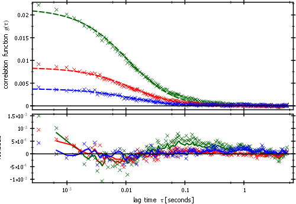

$$qf_commondoc_header.start$$ $$qf_commondoc_header.end$$
Introduction/Basics

This plugin allows to perform global fits for imaging FCCS data. in imFCCS datasets, for each pixel, several auto- and cross-correlation functions $$bmath:g_{\gamma\rho}(\tau)=\frac{\langle I_\gamma(t)\cdot I_\rho(t+\tau)\rangle}{\langle I_\gamma(t)\rangle\cdot\langle I_\rho(t)\rangle}-1=\frac{\langle\delta I_\gamma(t)\cdot\delta I_\rho(t+\tau)\rangle}{\langle I_\gamma(t)\rangle\cdot\langle I_\rho(t)\rangle}$$ exist, that partly describe the same particles. Therefore the parameters $$math:\vec{p}$$ of the FCCS model functions, that should be fitted to the measured correlation curves $$math:\left(\tau_i, \hat{g}_{\gamma\rho,i}\right)_{i=1..N}$$ are linked. Extraction of these parameters therefore requires a global fit, that optimizes the parameters of all these functions $$math:g_{\gamma\rho}(\tau)$$ simultaneously for every pixel. This plugin implements a global fit, which solves the least-squares problem:
$$bmath:\vec{p}^\ast=\argmin_{\vec{p}}\sum_{\gamma\rho}\sum_{i=1}^N\left[\frac{\hat{g}_{\gamma\rho,i}-g_{\gamma\rho}(\tau_i,\pi_{\gamma\rho}(\vec{p})}{\sigma_{\gamma\rho,i}}\right]^2,$$
where $$math:\pi_{\gamma\rho}(\vec{p})$$ is a mapping, that reduces the full parameter vector $$math:\vec{p}$$ to the (shorter) parameter vector of the model for a specific channel/curve $$math:\rho\gamma$$. The different correlation functions are indexed by $$math:\rho\gamma$$, which could mean different color channel (e.g. green and red) or different pixel positions.
This plugin allows to perform fits on several processor cores in parallel (multi-threaded). Set the maximum number of processors to use in the general settings dialog.
Contents of plugin online-help
- imFCS Curve Fit User Interface
- Fit Weighting
- Explanation of Fit Statistics
- Tool: calculate relative CCF amplitude
- imFCCS Tutorial
- imFCCS frequently asked questions
- Configuration (global fit parameter presets ...)
- Configuration options in the mains ettings dialog
- Hints for fit model programmers
Usable fit functions and algorithms
This plugin uses any of the available Fit Algorithm Plugins to execute the model fit:
$$list:fitalg:$$
Models have to be implemented as Fit Function Plugins. Models that may be used with this plugin are:
$$list:fitfunc:fccs_$$
$$list:fitfunc:fcs_$$
$$list:fitfunc:dls_$$